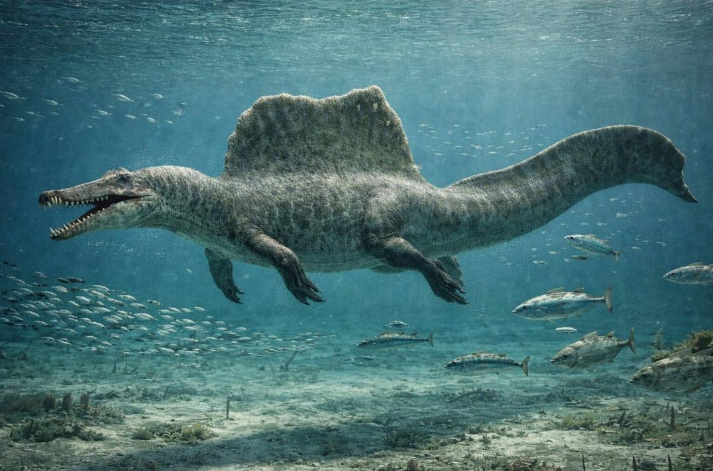
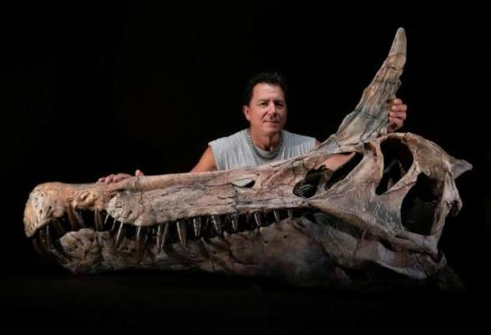

SPINOSAURUS: EL GIGANTE ACUÁTICO DEL CRETÁCICO
El Spinosaurus aegyptiacus fue uno de los dinosaurios carnívoros más grandes que existieron en la Tierra. Vivió hace aproximadamente 95 millones de años, durante el periodo Cretácico. Su nombre significa “lagarto con espinas”, debido a la enorme estructura en forma de vela que tenía sobre la espalda.

IMAGEN (G):@FossilEra.com - DAYORI SHIRO
El Spinosaurus podía medir entre 14 y 16 metros de largo, lo que lo hacía incluso más largo que el famoso Tyrannosaurus rex, se calcula que podía pesar hasta 9 toneladas, equivalente a varios autos juntos.
A diferencia de otros dinosaurios carnívoros que cazaban en tierra firme, el Spinosaurus estaba adaptado para la vida semiacuática.

IMAGEN (G): Universidad de Chicago - DAYORI SHIRO